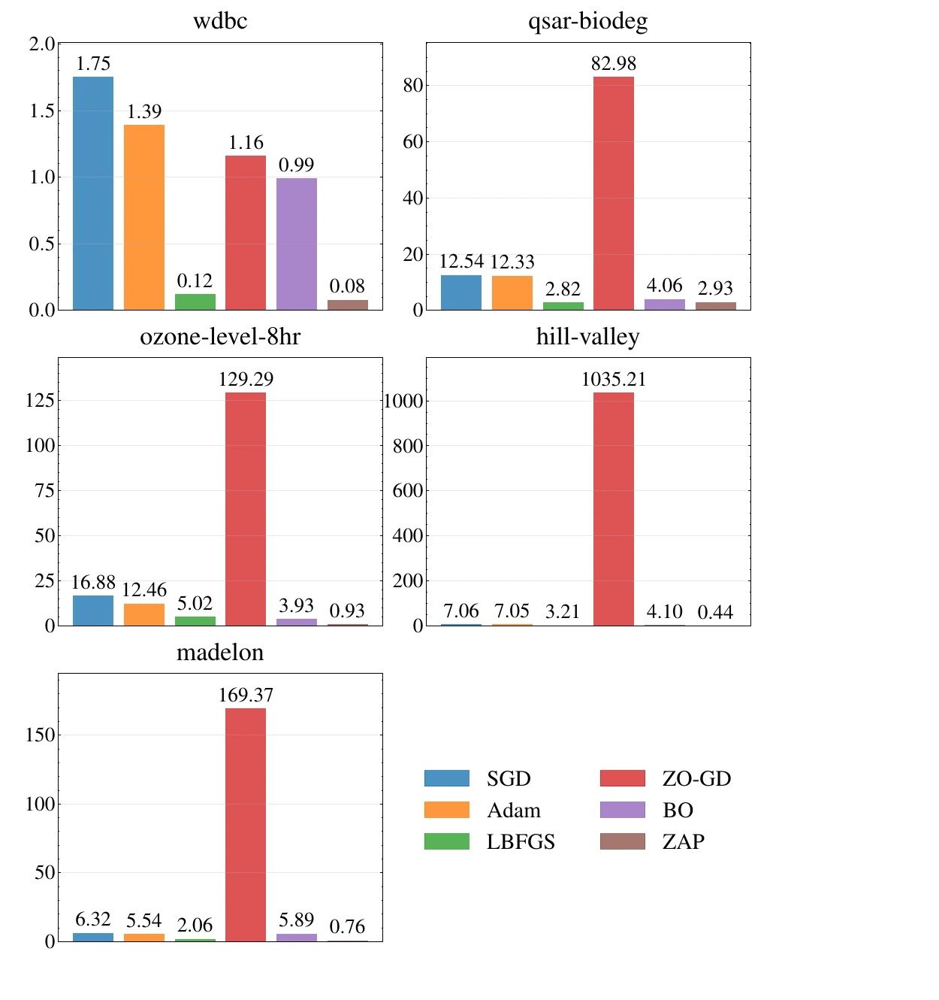

ICASSP 2026 (Oral)
Breaking the Curse of Dimensionality in Gaussian Process Training With Zeroth-Order Adaptive Perturbation
TL;DR. Training a Gaussian process gets expensive as the number of hyperparameters grows. ZAP estimates the full gradient from two loss evaluations, independent of dimension, with about 20x lower error and 118x less optimization time.
Abstract
Hyperparameter optimization remains a core challenge in training Gaussian processes (GPs), primarily due to the high computational cost and numerical instabilities associated with gradient-based optimizers. These issues are exacerbated in high-dimensional spaces, where the optimization landscapes become increasingly complex and difficult to navigate efficiently. We propose zeroth-order adaptive perturbation (ZAP), a scalable gradient-free algorithm that leverages simultaneous perturbations sampled from a Bernoulli distribution to obtain accurate gradient estimates with only two function evaluations per iteration, regardless of the hyperparameter dimensionality. Our theoretical analysis establishes that the gradient estimator is asymptotically unbiased and that ZAP converges to a stationary point under standard assumptions. Empirically, ZAP outperforms state-of-the-art gradient-based and gradient-free baselines on real-world datasets, achieving an average of 20 times reduction in mean-squared-error and a 118 times speedup in optimization time.
Zeroth-Order Adaptive Perturbation
A Gaussian process (GP) models an unknown function through a mean function and a covariance (kernel) function 1. Fitting a GP means minimizing the negative log-marginal likelihood (NLML) with respect to the full hyperparameter vector, which stacks the kernel hyperparameters and the noise variance into a vector of dimension p. Minimizing the NLML requires inverting an n × n kernel matrix at every iteration, an O(n3) operation that becomes prohibitive for large datasets 2, and its gradient can become unreliable once the kernel matrix is close to ill-conditioned 3. These costs and instabilities only get worse as the hyperparameter dimension p grows 4, even under structural simplifications such as additive kernels 5 or low-dimensional embeddings 6.
A standard gradient-free alternative is the finite-difference stochastic approximation estimator 78, which perturbs one hyperparameter at a time along each coordinate direction. Approximating all p partial derivatives this way costs 2p loss evaluations per iteration, which is prohibitive once p is large and every evaluation already costs O(n3).
ZAP instead adapts Spall's simultaneous perturbation approach 9 to GP training. At each iteration t, it perturbs every hyperparameter at once using a single random direction, rather than sweeping through coordinates one at a time:
- Perturbation: draw a random vector Δt whose p components are sampled independently and symmetrically from {−1, +1}.
- Gradient estimation: evaluate the NLML at θt+ = θt + βtΔt and θt− = θt − βtΔt, where βt is the perturbation step size, and form the estimate ĝt(θt) = [l(θt+) − l(θt−)] / (2βt) · Δt−1, where Δt−1 inverts each entry of Δt. This needs exactly two loss evaluations regardless of pa.
- Hyperparameter update: set θt+1 = θt − αtĝt(θt), with αt a learning-rate sequence, projecting back onto the feasible region when a hyperparameter has constraints such as non-negativity.
Why ZAP converges
Setting the step-size sequences to αt = a/(A + t + 1)τ and βt = b/(t + 1)γ, with rule-of-thumb constants a = 0.16, A = 100, b = 0.1, τ = 0.602, and γ = 0.101 10, satisfies the step-size conditions standard in the stochastic approximation literature 1112. Under these conditions, plus mild boundedness and stability assumptions on the NLML, ZAP's gradient estimator is asymptotically unbiased, with bias shrinking at rate O(βt2), and the hyperparameter iterates θt converge almost surely to a stationary point θ* of the NLML as t → ∞.
Experiments
All methods train a GP with an automatic relevance determination (ARD) kernel, which assigns one lengthscale to each input dimension. The hyperparameter dimension is therefore p = d + 2 (the d lengthscales plus the signal variance and noise variance), so p grows linearly with the input dimension d. ZAP is compared against stochastic gradient descent (SGD) 11, Adam 13, L-BFGS 14, the finite-difference zeroth-order method ZO-GD 78, and Bayesian optimization (BO) 15, all implemented in PyTorch with default settings. The evaluation uses five real-world regression datasets from OpenML, with input dimension ranging from d = 30 (wdbc) to d = 500 (madelon). Each dataset is split 80/20 into train and test, hyperparameters are optimized on the training split, and test-set mean-squared error (MSE) is reported, averaged over 10 random seeds.
| Dataset | d | SGD | Adam | L-BFGS | ZO-GD | BO | ZAP |
|---|---|---|---|---|---|---|---|
| wdbc | 30 | 0.116 ± 0.008 | 0.099 ± 0.007 | 0.122 ± 0.008 | 0.124 ± 0.014 | 0.109 ± 0.006 | 0.006 ± 0.001 |
| qsar-biodeg | 41 | 0.355 ± 0.013 | 0.364 ± 0.013 | 0.335 ± 0.012 | 0.273 ± 0.360 | 0.285 ± 0.010 | 0.018 ± 0.002 |
| ozone-level-8hr | 72 | 0.505 ± 0.036 | 0.462 ± 0.019 | 0.929 ± 0.236 | 0.015 ± 0.007 | 0.374 ± 0.045 | 0.008 ± 0.001 |
| hill-valley | 100 | 0.777 ± 0.012 | 0.775 ± 0.008 | 0.772 ± 0.010 | 0.696 ± 0.004 | 0.773 ± 0.004 | 0.686 ± 0.003 |
| madelon | 500 | 0.293 ± 0.284 | 0.284 ± 0.281 | 0.468 ± 0.297 | 0.162 ± 0.301 | 0.257 ± 0.270 | 0.124 ± 0.256 |
Table 1. Average test MSE (lower is better) ± standard error over 10 random seeds on five OpenML regression datasets. ZAP (bold in the paper) is lowest on every dataset.
ZAP obtains the lowest test MSE on all five datasets, by as much as 10× on wdbc, qsar-biodeg, and ozone-level-8hr, with a smaller but still consistent margin on the higher-dimensional hill-valley and madelon tasks. The gradient-based baselines converge to poor solutions because their gradients become unreliable as the kernel matrix approaches ill-conditioning, while ZO-GD and BO scale poorly with dimension because they rely on dense per-coordinate sampling and increasingly expensive surrogate modeling, respectively.

Figure 1. Average optimization time, in seconds, for SGD, Adam, L-BFGS, ZO-GD, BO, and ZAP across the five OpenML datasets. Note the different vertical scales across panels.
Across the five datasets, ZAP is on average 118× faster than the baselines because it always needs exactly two loss evaluations per iteration, while ZO-GD's cost scales linearly with the dimension d and BO's overhead grows with its surrogate-modeling process. Averaged across datasets, ZAP also reduces test MSE by about 20× relative to the baselines. One limitation the paper notes is that ZAP's gradient estimates are noisy, since each one depends on a single random perturbationb.
Open Question
Two simultaneous Bernoulli probes recover the full hyperparameter gradient from two loss evaluations, independent of how many kernel parameters there are, whereas finite differences would need two evaluations per parameter. ZAP shows that this two-point estimator is asymptotically unbiased and that the iterates reach a stationary point of the GP marginal likelihood, so deriving a finite-sample error bound for the estimator, and a convergence rate for the hyperparameters, remains open.
Citation
@inproceedings{suwandi2026breaking,
title={Breaking the Curse of Dimensionality in Gaussian Process Training With Zeroth-Order Adaptive Perturbation},
author={Suwandi, Richard Cornelius and Yin, Feng and Chang, Tsung-Hui},
booktitle={51st IEEE International Conference on Acoustics, Speech and Signal Processing (ICASSP)},
year={2026},
organization={IEEE}
}Footnotes
- The two evaluations l(θt+) and l(θt−) are independent, so they can also run in parallel on multi-core hardware, further reducing wall-clock time. [↩]
- The authors suggest that averaging gradient estimates across iterations, in the spirit of momentum 16, is a natural way to reduce this noise in future work. [↩]
References
- Gaussian Processes for Machine Learning
Christopher K. I. Williams and Carl Edward Rasmussen. Gaussian Processes for Machine Learning, vol. 2. MIT Press, 2006. - Exact Gaussian Processes on a Million Data Points
Ke Wang, Geoff Pleiss, Jacob Gardner, Stephen Tyree, Kilian Q. Weinberger, and Andrew Gordon Wilson. Advances in Neural Information Processing Systems, vol. 32, 2019. - A Solution to the Ill-Conditioning of Gradient-Enhanced Covariance Matrices for Gaussian Processes
Andre L. Marchildon and David W. Zingg. International Journal for Numerical Methods in Engineering, vol. 125, no. 16, e7498, 2024. - Gaussian Process Regression With Grid Spectral Mixture Kernel: Distributed Learning for Multidimensional Data
Richard Cornelius Suwandi, Zhidi Lin, Yiyong Sun, Zhiguo Wang, Lei Cheng, and Feng Yin. 25th International Conference on Information Fusion (FUSION), IEEE, 2022, pp. 1–8. - Additive Gaussian Processes
David K. Duvenaud, Hannes Nickisch, and Carl Rasmussen. Advances in Neural Information Processing Systems, vol. 24, 2011. - Active Learning of Linear Embeddings for Gaussian Processes
Roman Garnett, Michael A. Osborne, and Philipp Hennig. arXiv preprint arXiv:1310.6740, 2013. - Stochastic Estimation of the Maximum of a Regression Function
Jack Kiefer and Jacob Wolfowitz. The Annals of Mathematical Statistics, pp. 462–466, 1952. - Random Gradient-Free Minimization of Convex Functions
Yurii Nesterov and Vladimir Spokoiny. Foundations of Computational Mathematics, vol. 17, no. 2, pp. 527–566, 2017. - Multivariate Stochastic Approximation Using a Simultaneous Perturbation Gradient Approximation
James C. Spall. IEEE Transactions on Automatic Control, vol. 37, no. 3, pp. 332–341, 1992. - Implementation of the Simultaneous Perturbation Algorithm for Stochastic Optimization
James C. Spall. IEEE Transactions on Aerospace and Electronic Systems, vol. 34, no. 3, pp. 817–823, 2002. - A Stochastic Approximation Method
Herbert Robbins and Sutton Monro. The Annals of Mathematical Statistics, pp. 400–407, 1951. - Stochastic Approximation Methods for Constrained and Unconstrained Systems
Harold Joseph Kushner and Dean S. Clark. Springer Science & Business Media, vol. 26, 2012. - Adam: A Method for Stochastic Optimization
Diederik P. Kingma and Jimmy Ba. arXiv preprint arXiv:1412.6980, 2014. - On the Limited Memory BFGS Method for Large Scale Optimization
Dong C. Liu and Jorge Nocedal. Mathematical Programming, vol. 45, no. 1, pp. 503–528, 1989. - Bayesian Optimization
Roman Garnett. Cambridge University Press, 2023. - On the Importance of Initialization and Momentum in Deep Learning
Ilya Sutskever, James Martens, George Dahl, and Geoffrey Hinton. International Conference on Machine Learning, PMLR, 2013, pp. 1139–1147.